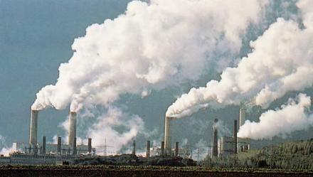
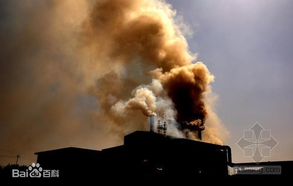
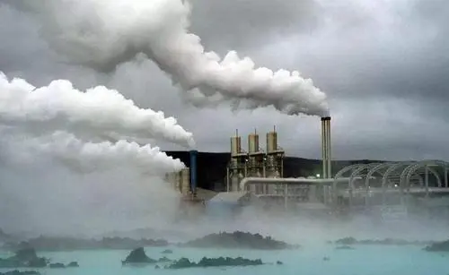
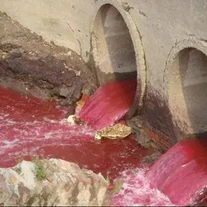
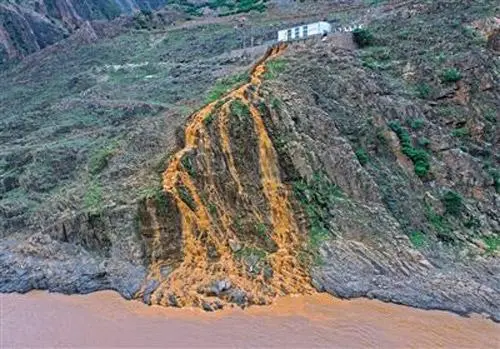
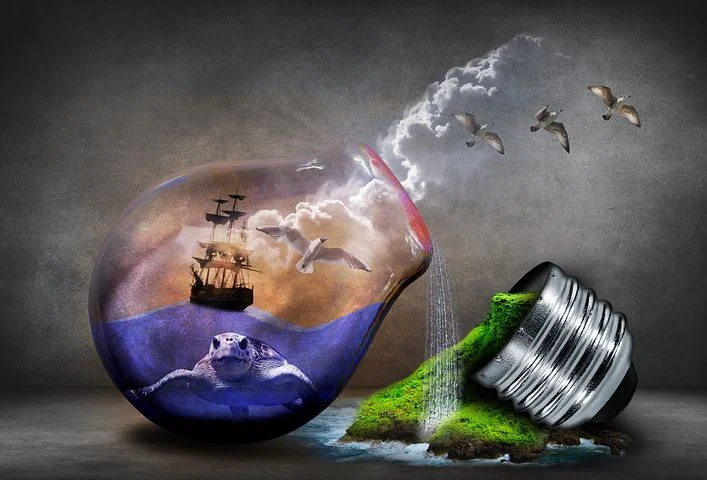

首页
造成环境污染的原因
工厂排出的废烟、废气、废水、废渣和噪音；

人们生活中排出的废烟、废气、噪音、脏水、垃圾；

交通工具（所有的燃油车辆、轮船、飞机等）排出的废气和噪音；

大量使用化肥、杀虫剂、除草剂等化学物质的农田灌溉后流出的水；

矿山废水、废渣；

机器噪音，电磁辐射，二氧化碳污染；
环境污染的类型
按环境要素分
环境污染
按属性分
大气污染
土壤污染
水体污染
按人类活动分
工业环境污染
城市环境污染
农业环境污染
按造成环境污染的性质来源分
化学污染
生物污染
物理污染
固体废物污染
液体废物污染
能源污染
光污染
环境污染的特点
公害性，环境污染不受地区，种族，经济条件的影响，一律受害。
潜伏性，许多污染不易及时发现，一旦爆发后果严重。
长久性，许多污染长期连续不断的影响，危害人们的健康和生命，并不易消除。

Copyright ©2021
by:移动应用开发一班 210403020吴泽 18371912381